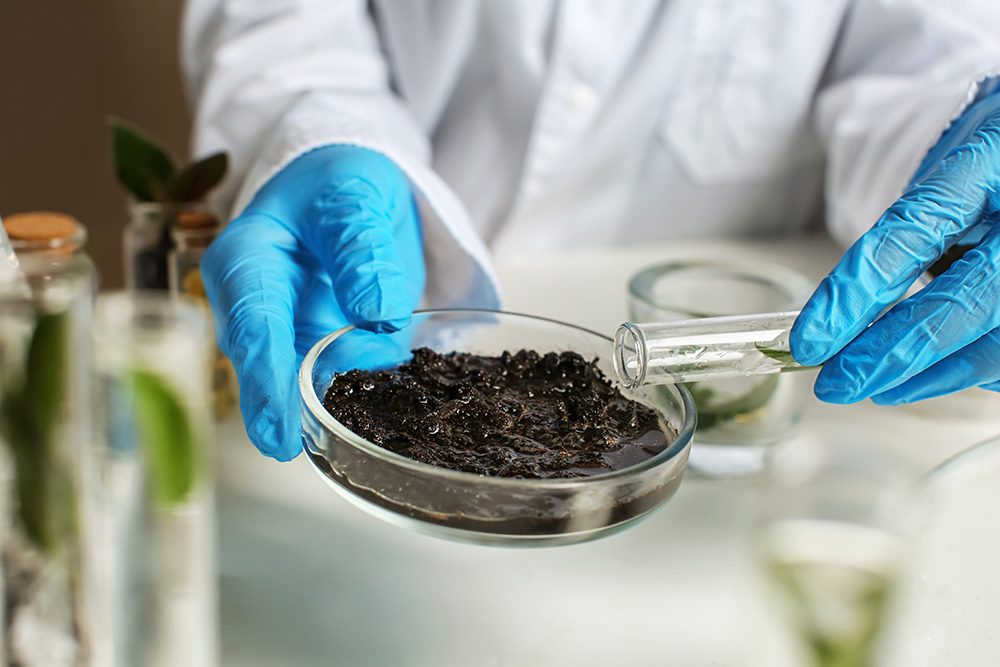
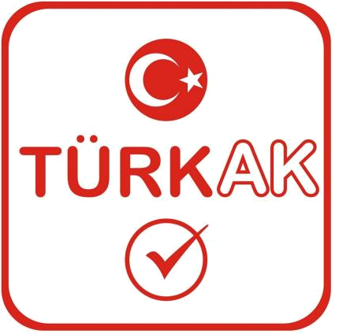

Gübre Analiz Laboratuvarı, METALAB Antalya Test Hizmetleri San. ve Tic. Ltd. Şti. çatısı altında TS EN ISO/IEC 17025:2017 standardında akredite deney laboratuvarı olarak hizmet verir.
METALAB Antalya; kimyevi, organik, mineral ve mikrobiyal gübrelerin içerik ve kalite analizlerinde uzmanlaşmıştır. Piyasa gözetimi ve denetimi yönetmeliklerine uygun, standart ve işletme-içi doğrulanmış metotlarla çalışır.
ICP-OES, LC-MS/MS, GC-MS/MS ve HPLC gibi ileri enstrümantal cihazlarla makro besinlerden eser ağır metallere, hormonlardan mikotoksinlere kadar geniş bir parametre yelpazesinde analiz yapar.
Amacımız; şeffaf, izlenebilir ve uluslararası kabul gören yöntemlerle üreticiye, sanayiciye ve çiftçiye güvenilir veriyi en kısa sürede sunmaktır.

TÜRKAK · AB-2181-T
Laboratuvarımız Türk Akreditasyon Kurumu (TÜRKAK) tarafından denetlenmiş; EA ve ILAC karşılıklı tanıma anlaşmaları kapsamında akredite edilmiştir. Güncel metot listesi için metalabantalya.com adresini ziyaret edebilirsiniz.
TS EN ISO/IEC 17025:2017 standardında, izlenebilir ve uluslararası geçerli sonuçlar.
ICP-OES, spektrofotometrik ve titrimetrik yöntemlerle eser seviyede hassasiyet.
Analiz tipine göre 1–5 iş günü içinde net ve anlaşılır rapor.